TruNorth
An AI-powered career coaching app guiding users toward the right career path, awarded 3rd place at the PM Accelerator bootcamp.


Overview
TruNorth is an AI-powered career coaching platform designed for students, career switchers, and professionals in transition. The app helps users move from feeling “stuck” to gaining clear, testable career directions by generating personalized hypotheses and next-step actions. Through a proactive conversational experience, it builds clarity, momentum, and confidence. Built as an MVP during the Product Manager Accelerator Bootcamp, TruNorth was selected as part of the Top 3 projects and ultimately ranked 3rd overall.
Role
UX/UI designer
Tools
Figma
Team
3 UX/UI designers, 5 developers
Timeline
Oct - Dec 2025 (8 weeks)
Problems
People in career transition often feel stuck and uncertain about their next move. Existing career tools give vague or generic results and fail to provide clear, personalized actions. The challenge was to create an AI assistant that helps users quickly gain clarity and turn it into practical next steps.
Target Users
Recent Graduates who need quick clarity on career direction
Career Switchers looking for realistic, skill-aligned paths
Professionals Returning After a Break seeking gentle re-entry
Burned-Out or Stagnant Employees wanting value-aligned options
Underemployed Gig Workers who need viable, stepwise growth paths
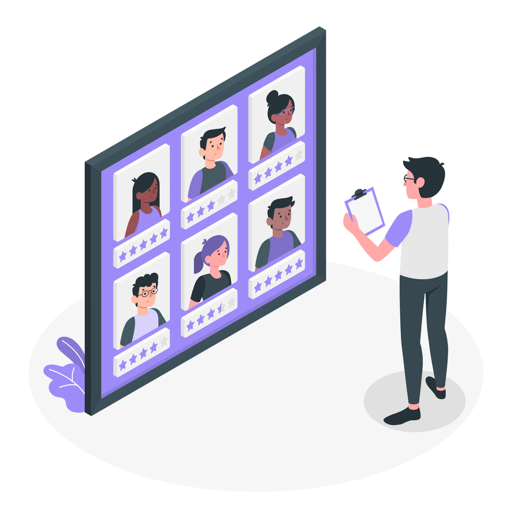
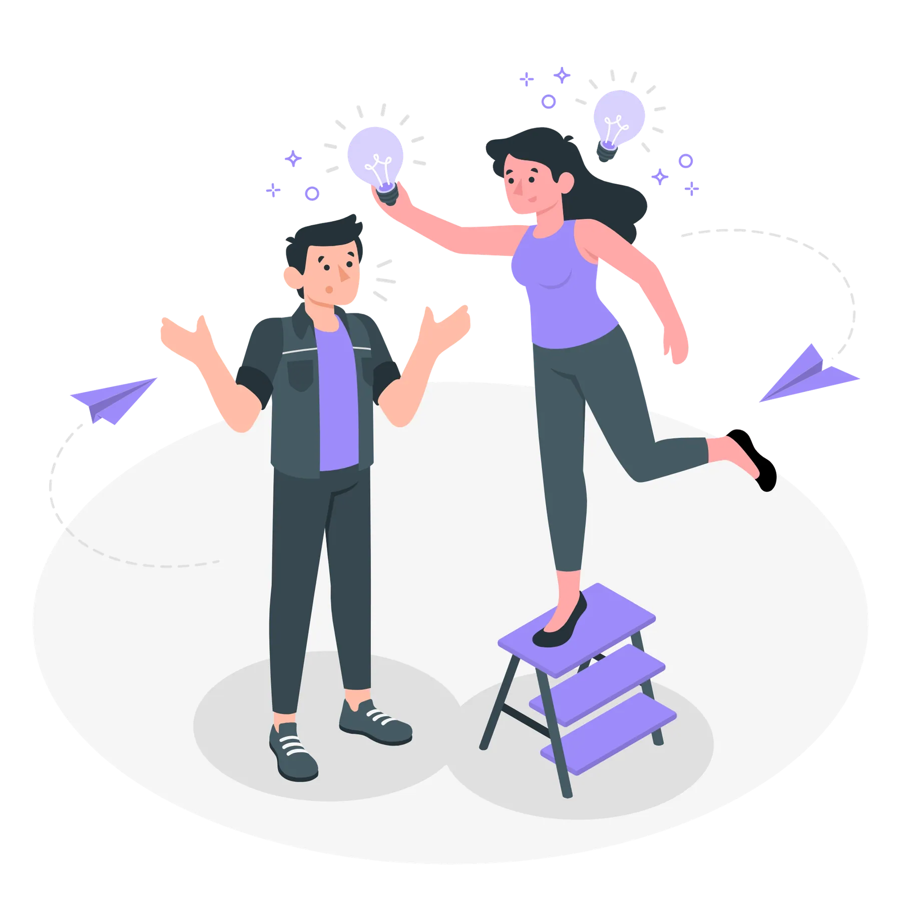
Discovery & Key Insights
Clarity over volume: Users need a small set of testable directions, not more info.
Momentum matters: Low-friction micro-actions and nudges convert insight into progress.
Transparent reasoning: Users trust suggestions more when rationale and evidence are visible.
“These insights were derived from the project PRD and PM research.”
User Flow Evolution
During the early stages of the project, multiple user flows were created by the product team to explore different possibilities for how a first-time user might move from “stuck” to a clear, testable career direction.
The initial flows labeled Flow 1, Flow 2, and Sara’s Flow each emphasized different priorities.
These versions were intentionally exploratory. Each one helped reveal friction points, dependencies, and missing steps in the experience. Through several rounds of iteration, discussions, and synthesis, the team gradually merged the strongest elements from all three.
After several iterations and discussions, the team reached clarity and aligned on one streamlined user flow. These explorations helped shape a clearer direction, and ultimately the final flow was created as the foundation of the MVP
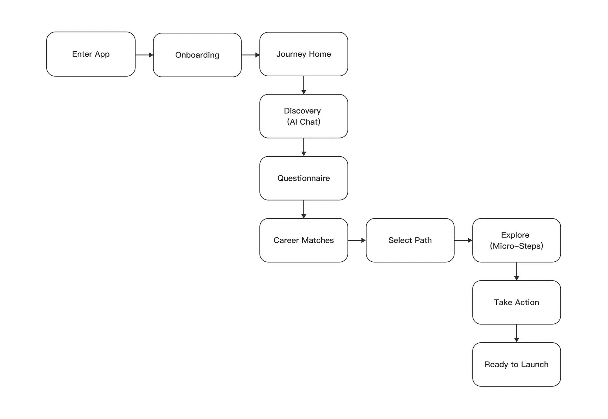
Competitive Analysis
To understand how leading AI-driven products structure conversations, guide user decisions, and maintain engagement, I conducted a competitive analysis across several conversational and coaching-style applications: Duolingo, Khan Academy, Grammarly, Question.ai, DeepSeek, Gemini, and Answer.ai.
The goal was to study:
How AI interacts with users (tone, pacing, hand-holding)
How tasks are structured in chat-based or step-based journeys
How products keep users motivated during longer learning or decision-making flows
How complexity is simplified into lightweight, approachable steps
Among all references, Duolingo and Answer.ai became the most influential for our flow.
Duolingo helped us understand micro-steps, positive reinforcement, and simple progression indicators.
Answer.ai provided insight into clear conversational framing, question pacing, and reducing cognitive load during AI-led interactions.
These insights directly informed how our AI assistant frames discovery, guides the questionnaire, and transitions users into actionable career paths ensuring the flow stays human, clear, and momentum-driven.
Wireframes & Iterations
During the early phase, I created several high-fidelity sketches to explore structure, layout, and the overall journey flow.
After team discussions, one of my teammates developed an initial main journey layout, which became our shared reference.
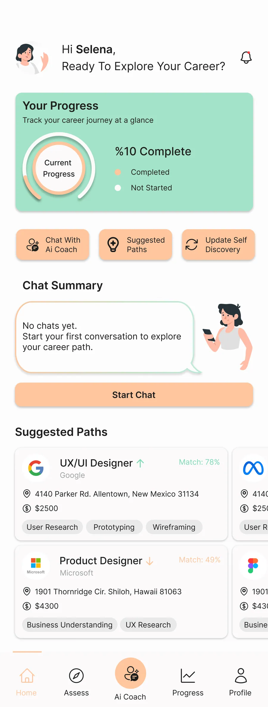
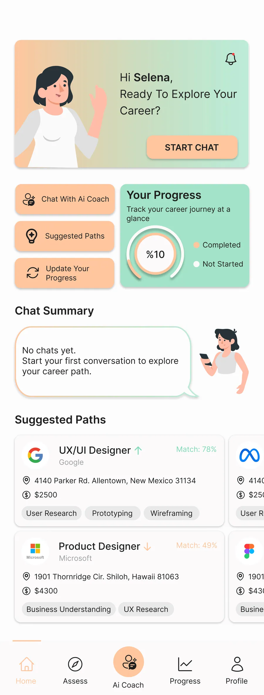
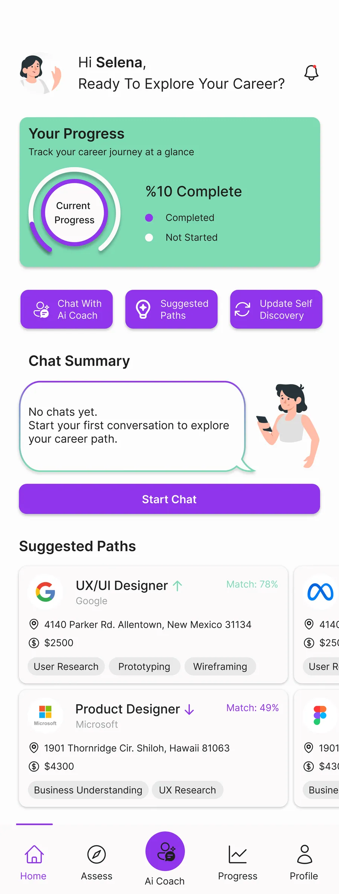
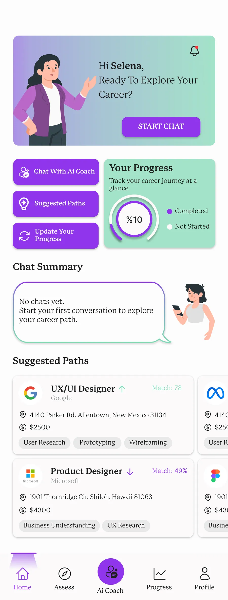
Design Contributions
After the main home-journey layout was defined by the team, I continued designing the remaining parts of the app to ensure visual and structural consistency.
I refined the color direction by shifting the primary palette to purple (#9D8BF9), and worked on the Splash Screen, AI chat screens, questionnaires, login & sign-up flow, onboarding, pop-ups, navigation bar, and the menu page.
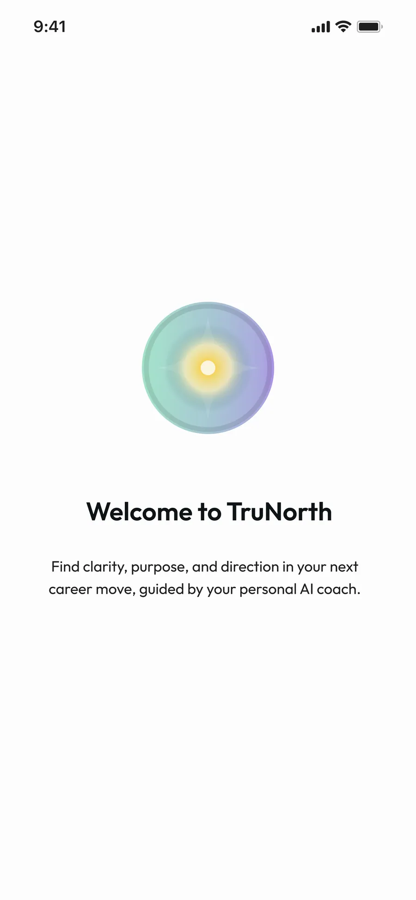
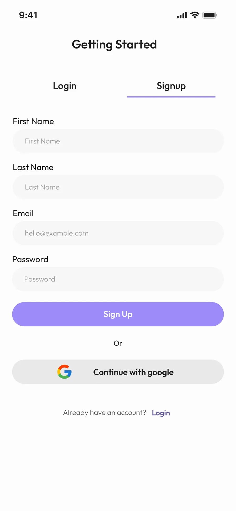
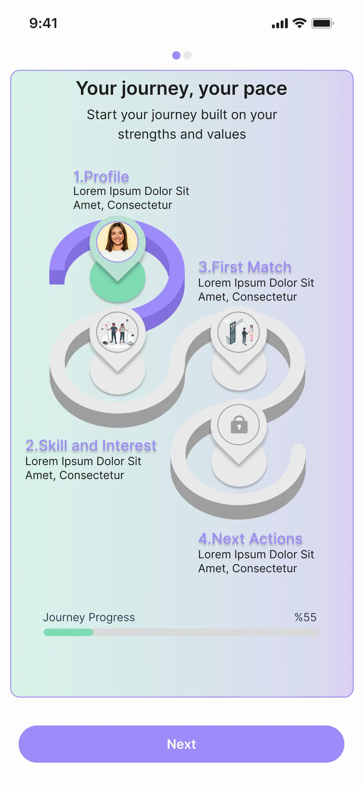
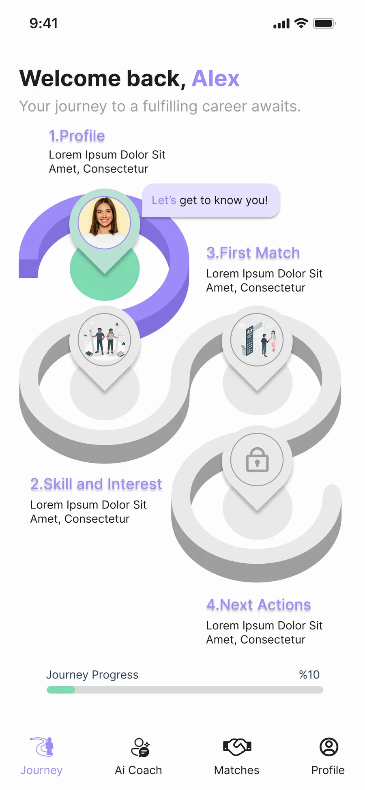
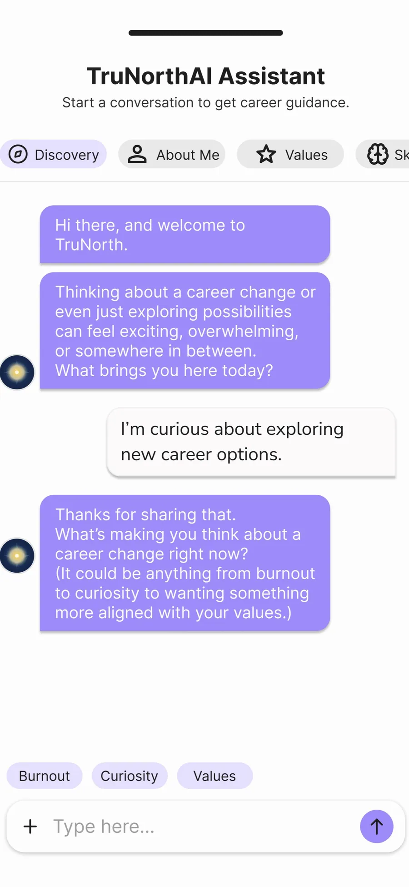
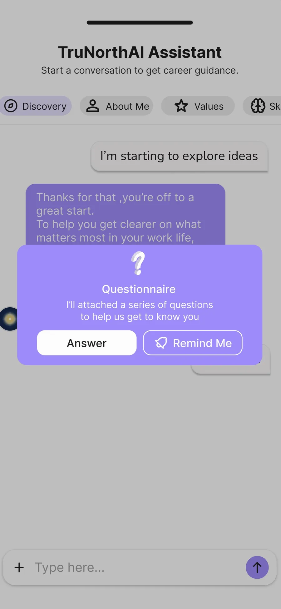
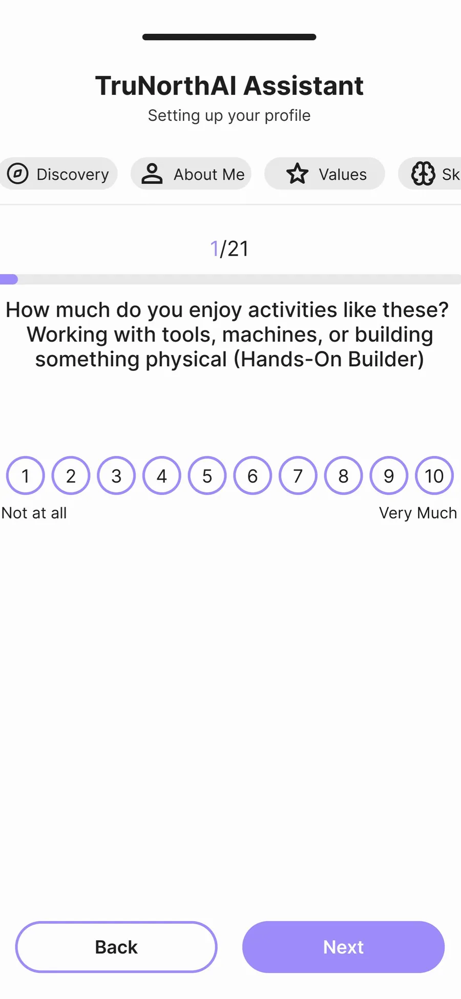
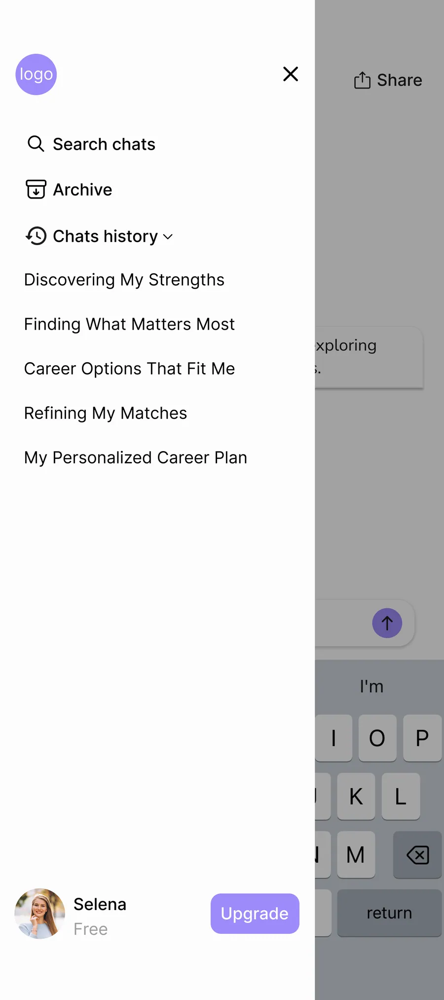
These designs were not final; they went through multiple rounds of refinement to reach a simpler, clearer, and more intuitive experience. Alongside my assigned tasks, I regularly reviewed teammates’ screens with their permission to align spacing, color usage, and visual consistency across the entire product. While the main design of the Home screen as a step-based flow was done by my teammate, I handled the consistency work and ensured visual harmony throughout.
The logo was initially designed by my teammate, and I updated its color to match the brand palette (#9D8BF9). I also designed the splash screen and with my teammate, removed the dedicated onboarding background, redesigning the flow so users could intuitively understand the onboarding steps without confusion.
All other design work, including refining automatic chat responses, the chat box structure, questionnaire and overall visual hierarchy for better readability, was done by me. For the Career Path cards, I contributed the idea of displaying them as a horizontal swappable carousel. Additionally, I collaborated with my teammate to redesign the menu.
AI Companion Overlay
Early-Stage Concept That Didn’t Make It to the MVP
During the early design stages, I explored a concept aligned with the PM’s strong focus on making the AI feel present from the very beginning of the user journey. To address this, I proposed an AI onboarding overlay that would appear right after login and onboarding gently guiding users through the home screen and the early steps of their experience.
The idea was for the AI to act as a persistent companion, appearing as an onboarding-style overlay on the main screens and transitioning into a full conversational experience inside the chat flow. This approach aimed to increase clarity, reduce uncertainty about “what to do next,” and create a more supportive first-time experience.
Due to tight timelines and the constraints of building the MVP, this concept wasn’t implemented, but it helped inform discussions around user guidance and the overall product experience.
Human-in-the-Loop Admin Dashboard
Although the core product was mobile-focused, the team also required a simple desktop interface for admin monitoring and Human-in-the-Loop review. My responsibility in this part was limited to UI design for the login screen and the main admin dashboard based on the structure provided by the PM team.
The admin dashboard included:
a table view listing user accounts (name, user ID, account creation date, last login)
a detail view that allowed admins to inspect full AI–user conversations
an editable “Review Tool” area where admins could adjust the AI-generated chat summaries, user tags, and internal notes
I focused on ensuring the desktop UI stayed visually consistent with the mobile product clean layout, readable table structure, and a lightweight system that matched the brand’s visual language.
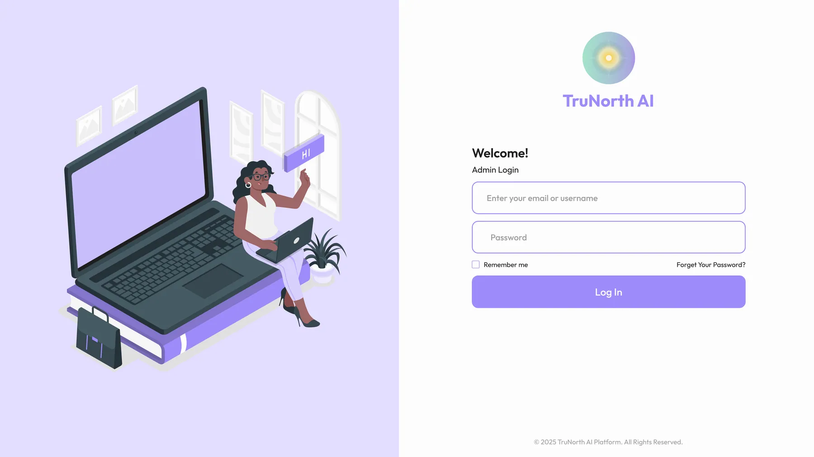
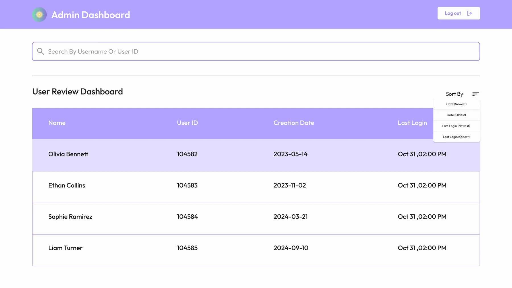
Finally...
This MVP project allowed our team to rapidly bring an AI-powered career-coaching concept to life moving from early sketches and exploration to a functional, user-tested product.
Through continuous iteration, alignment with PM direction, and collaborative design refinement, we shaped an experience that is clearer, more supportive, and more actionable for users seeking career direction.
Despite time constraints, we delivered a cohesive end-to-end flow, established a unified visual system, and designed an interface that balances simplicity with intelligent guidance. Several of my proposed enhancements such as the persistent onboarding overlay AI remain valuable opportunities for future development.
Overall, the project not only placed our team in the Top 3 of the accelerator program, but also demonstrated how fast, focused iteration can turn ambiguity into a validated, user-ready MVP.